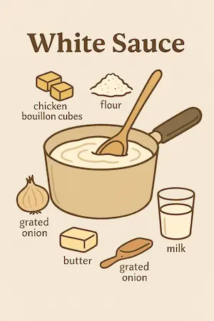
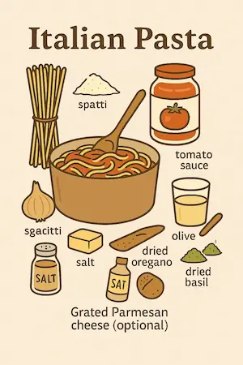
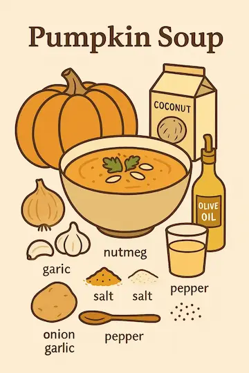

Our Recipes
Try out our delicious dishes for every occasion!
Chocolate Cake

- 2 cups flour
- 1 cup sugar
- 1 cup cocoa powder
- 3 eggs
- 1 cup milk
Instructions: Mix all ingredients and bake at 180°C for 35 minutes.
Caramelized Banana Cake
Ingredients - Batter
- 3 eggs
- 3 tablespoons of margarine
- 1 and 1/2 cups of sugar
- 1 pinch of salt
- 1 cup of milk
- 2 cups of all-purpose flour
- 1 level tablespoon of baking powder
Ingredients - Topping
- 1 cup of sugar
- 4 to 5 bananas
Instructions
Pour the sugar into a round bundt pan and melt it over low heat until fully caramelized. Slice the bananas and arrange them over the caramel. Mix ingredients and bake at 180°C for 30 minutes.
Brigadeiro

- 3 tablespoons cocoa powder
- 1 can sweetened condensed milk
- 1 can heavy cream
- 1 tablespoon butter
Instructions: Cook all ingredients over medium heat, stirring constantly until thickened. Let cool, eat with a spoon, or roll into balls.
White Sauce
- 2 chicken bouillon cubes
- 2 tablespoons flour
- 1 tablespoon butter
- 1 grated onion
- 1 ½ cups milk
Instructions: Sauté onion in butter, then add flour, bouillon cubes, and milk. Stir until thickened, blend, return to heat, and add cheese if desired.
Italian Pasta
Ingredients
- 200g pasta (spaghetti, penne, or your choice)
- 2 cups canned tomato sauce
- 2 cloves garlic, minced
- 1 small onion, chopped
- 1 tablespoon olive oil
- 1 teaspoon salt
- ½ teaspoon black pepper
- ½ teaspoon dried oregano
- ½ teaspoon dried basil
- Grated Parmesan cheese (optional)
Instructions
Cook the pasta according to the package instructions until al dente. Drain and set aside.
In a pan, heat olive oil over medium heat and sauté the garlic and onion until fragrant.
Add the canned tomato sauce, salt, black pepper, oregano, and basil. Stir and let simmer for 10 minutes.
Toss the cooked pasta into the sauce and mix well.
Serve hot, garnished with grated Parmesan cheese if desired.
Pumpkin Soup
Ingredients
- 2 cups diced pumpkin
- 1 small onion, chopped
- 2 cloves garlic, minced
- 2 cups vegetable broth
- 1 cup coconut milk or heavy cream
- 1 teaspoon salt
- ½ teaspoon black pepper
- ½ teaspoon ground nutmeg
- 1 tablespoon olive oil
Instructions
Heat olive oil in a pot over medium heat. Add the onion and garlic, and sauté until fragrant.
Add the diced pumpkin and cook for 5 minutes, stirring occasionally.
Pour in the vegetable broth, bring to a boil, then reduce heat and let simmer until the pumpkin is soft (about 15 minutes).
Use a blender or immersion blender to puree the mixture until smooth.
Stir in the coconut milk or cream, then season with salt, pepper, and nutmeg.
Simmer for another 5 minutes and serve warm, garnished with fresh herbs or pumpkin seeds.